Activity: Analyzing motion
Open the assembly and activate all the parts in the assembly.
Open and activate all the parts in the assembly slider_linkage.asm located in the folder where the activity files are located.
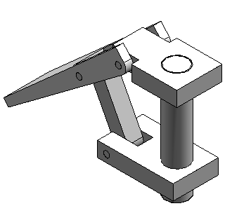
In Assembly PathFinder, select slider_block.par. Right-click the Mate Relationship, and click Delete Relationship.
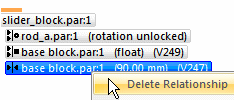
Start the Motion application.
Choose the Tools tab→Environs group→Motion command .
Choose the Home tab→Mechanism group→Create New Mechanism command.
In the Create New Mechanism dialog box type the mechanism name and click OK.
When prompted to automatically add the parts, click Clear All in the Motion - Add New Parts dialog box and then click OK.
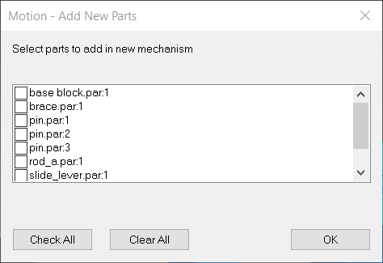
In the Motion environment, in the Mechanism group, select the Display Motion Builder command
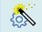
.In the Motion Builder wizard, click the Gravity tab. Verify the Gravity On box is selected, and then click Next.
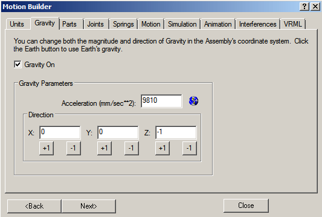
On the Parts tab, drag base block.par;1, rod_a.par;1, and pin.par:1 to Ground Parts.
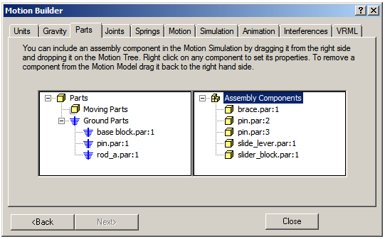
Drag the remaining parts to Moving Parts. Dismiss the Motion Messages dialog box.
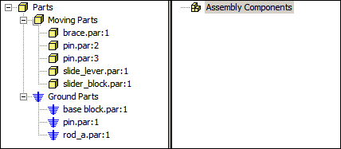
Click Next to proceed to the Joints tab.
Click the Joints plus sign to expand the joints list.
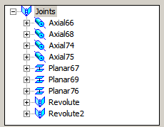
Because you deleted the Mate Relationship before activating the motion command, Solid Edge did not recognize or create a joint from the Mate Relationship.
Simulate motion of the linkage and find the initial collision of the parts.
In the Motion Builder wizard, click the Simulation tab.
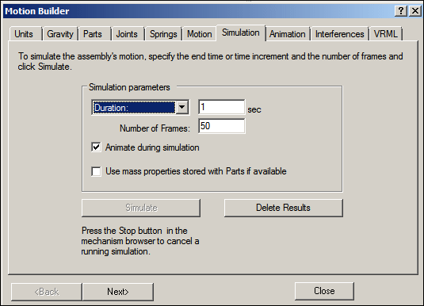
Click Simulate to set the parts in motion, and watch the motion display.
Click the Interferences tab.
If the wizard blocks the view of the assembly, drag the wizard window to the right of the assembly window. Click Check Interferences.
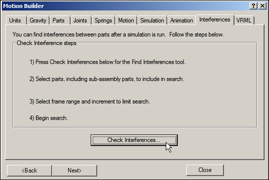
In the assembly graphics window, click brace.par and slide_lever.par to add them to the list of parts to test in the Find Interferences Over Time dialog box.
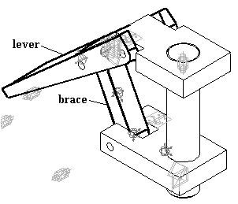
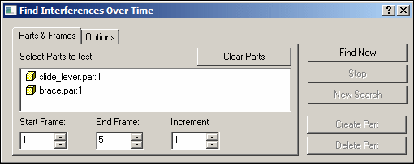
Click the Options tab. Click Find First Contact, and then click Find Now.
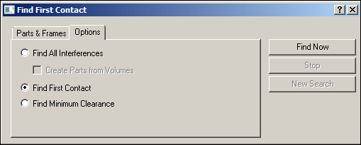
Watch the assembly move and then stop when the first interference between the two parts is detected.
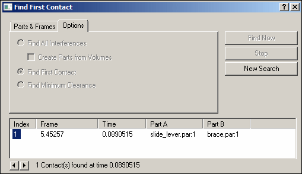
Part interference begins at frame 5.45.
Close the Find First Contact dialog box.
On the Inspect tab, in the 3D Measure group, click Measure Distance command. Set the element type to All elements.
For the points to measure between, select the lower-right corner of the base and the upper-right corner of the slider block.
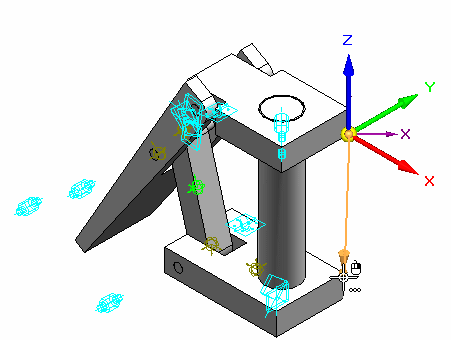
Notice that the distance in delta Z is -110.14 mm. These parts interfere if the distance between the base block and the slider block is 110.14 mm or greater.
On the Measure Distance command bar, click Close.
Close any open dialog boxes. Click Close Motion to return to the assembly.
Save and close the file. This completes the activity.
In this activity you learned how to use the Motion command to analyze the movement of a simple linkage. Parts that did not move were grounded and parts that did move had no constraints in their direction of travel. When motion was applied, interference was detected and measured.
-
Click the Close button in the upper-right corner of this activity window.
Answer the following questions:
-
What is Simply Motion?
-
How can you detect the initial point of a collision between moving parts?
-
Once an interference is detected how can the range of motion be limited so that interference does not occur?
-
What is Simply motion?
The Simply Motion module allows you to perform motion simulations on Solid Edge assemblies. Simply Motion creates moving parts and motion joints directly from assembly constraints. Additional joints, springs, and motion generators can be added through an easy to use "Wizard" style interface. Simply Motion contains a 3D dynamic motion engine that allows you to simulate problems that are far beyond simple linkages or kinematic type problems. The simulation results can be used to generate animations of your moving assembly, or to check for interference as the assembly moves through its full range of simulated motion
Simply Motion is a subset of Dynamic Designer from Design Simulation Technologies. Simply Motion is included in Solid Edge at no charge. Upgrades to Dynamic Designer can be purchased from Design Simulation Technologies.
-
How can you detect the initial point of a collision between moving parts?
Using the interference tab in Simply motion will analyze and show where the initial interference occurs. The drag component command also checks for collisions and interference.
-
Once an interference is detected how can the range of motion be limited so that interference does not occur?
The range offset values can be set for valid assembly relationships.